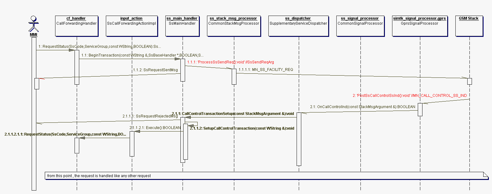

This part of the documentation deals with the API for Call Independent Supplementary Services. These are Call Forwarding, Call Waiting, Call Barring, CLIP, CLIR, COLP, COLR and USSD. The Supplementary Service API makes use of the handler/dispatcher concept, that is widely known also in other parts of APOXI.
For each Supplementary Service there is one handler, that provides the interface necessary for working with the service. All Supplementary Service requests sent by the MMI are done via the Supplementary Service handlers. Operations allowed on a Supplementary Service is always a subset of the following:
FromStackMsgs and StackMsgArgs by the APC layer. These messages are received by the SupplementaryServiceDispatcher. The dispatcher then analyses the content of the messages with help of the handler that was used to send the intial request. A corresponding message is then sent to the MMI. This way, all logic regarding a certain Supplementary Service is grouped in the handler.
Figure 1: Overview of central classes for Supplementary Service handling
The actual sending of any request is initiated by one of the special handlers (like the CallForwardingHandler). Based on the specific method call and the parameters of that method, the handler will generate a specific Supplementary Service control sequence. The control sequence is then passed to the SsMainHandler which sends it to the GSM stack. By sending an request to the GSM stack an Supplementary Service transaction is started. The transaction is now in a setup state. Until this transaction is completed or aborted no other Supplementary Service transaction can be started. The handler is responsible for storing all information (e.g. parameters) of the request that is needed for the further processing of the request.
After the request was processed by the GSM stack and/or network, a signal with the result for the request is sent to APOXI by the GSM Stack. This signal is picked up in the APC layer by the CommonSignalProcessor. The following methods are responsible for processing the signals:
| Signal Name | Method |
|---|---|
| MN_SS_BEGIN_ACC | PostSsBeginAcc() |
| MN_SS_FACILITY_REJ | PostSsFacilityRej() |
| MN_SS_FORWARDING_IND | PostSsForwardingInd() |
| MN_SS_BARRING_IND | PostSsBarringInd |
| MN_SS_DATA_IND | PostSsDataInd() |
| MN_SS_NOTIFYSS_IND | PostSsNotifyInd() |
| MN_SS_INTERROGATE_IND | PostSsInterrogateInd() |
| MN_SS_PASSWORD_IND | PostSsPasswordInd() |
| MN_SS_UNSTRUCT_IND | PostSsUnstructInd() |
| MN_SS_FORWCHECK_IND | PostSsForwcheckInd() |
| MN_SS_RET_RES_IND | PostSsRetResInd() |
| MN_SS_END_IND | PostSsEndInd() |
| MN_SS_REJ | PostSsRej() |
| MN_SS_ERR_IND | PostSsErrInd() |
| MN_SS_GET_PASSWORD_IND | PostSsGetPasswordInd() |
| MN_SS_GET_PASSWORD_REJ | PostSsGetPasswordRej() |
| MN_SS_USSD_IND | PostSsUssdInd() |
| MN_SS_USSD_RESENT_INT | PostSsUssdResentInd() |
The results received by the GSM stack (contained in the signals) are initially wrapped in a specific StackMsgArg object and then dispatched using the regular Apoxi dispatch mechanism. If the argument is in any way Supplementary Service related it is picked up by the SupplementaryServiceDispatcher. See the argument map of the class for a list of arguments which are actually picked up. The SupplementaryServiceDispatcher then starts to process the argument.
The first signal always is MN_SS_BEGIN_ACC. This signal contains the TiPd of the Supplementary Service transaction which is used as identifier for the transaction. This TiPd is now included in every signal coming from the GSM stack, that belongs to this transaction.
All data of the signal is wrapped into an SsBeginAccArg and sent to the SupplementaryServiceDispatcher, which sends an SsRequestAcceptedMsg to the MMI. Also the Supplementary Service transaction is brought from setup into established state. This step connects the handler that has sent the request with the TiPd of the transaction. This is needed for processing further results delivered by the GSM stack.
The second signal coming is the one that contains the actual (interesting) data (in our example MN_SS_INTERROGATE_IND). The CommonSignalProcessor wraps the data of this signal into a SsInterrogateIndArg and sends it to the SupplementaryServiceDispatcher.
The SupplementaryServiceDispatcher first wraps the argument in a SsStackMsgArgument. The purpose of this wrapper class is to cache often needed parameters of the argument like the TiPd or the release-complete flag. Unfortunately it is not possible to define a common super class for a certain set of arguments (like e.g. Supplementary Service arguments) to provide a common interface to access common member variables. Therefore to access e.g. the TiPd of the argument, which in fact is part of every Supplementary Service argument, the argument has to be identified first, then cast into its specific class and the apropriate get-method called. Clearly this process is cumbersome and extremely costly in terms of performance, let alone the duplicate code this would introduce.
After wrapping, the data is passed on the handler that was used for the initial request (here it's CallForwardingHandler). The code for parsing the contents of the argument and creating the result messages, which will be sent to the MMI is located at the specific handler, which was responsible for initiating the request in the first place. So the handlers are responsible for sending the request as well as processing the received results. Furthermore the handler is the only place to sensibly store additional data related to the transaction like the parameters of the initial request, which are needed for the result message as well.
The idea behind the separation of the logic for creating a message for MMI and for sending it is, that the system can be easily extended. All the logic that is special to a Supplementary Service is within the handler class. The whole transaction management is done in SupplementaryServiceDispatcher and SsMainHandler. This way, if a new Supplementary Service has to be added, it is sufficent to write a new handler and connect it to the rest of the system.
Finally the dispatcher checks with the handler if there is any message that needs to be sent. The dispatcher then retrieves the message and sends it on to the MMI using the MessageRouter. Each result signal contains a "release complete" flag, that indicates, if the transaction is over by arrival of the signal. If this flag is set in the result, the transaction is released and all data stored in the SsMainHandler and in the Supplementary Service handler is freed.
Under some circumstances the GSM network may send notifications to the mobile station. The process for these notify messages is slightly different, since these notifications are not the result of a request sent by a handler, but are triggered by the network. Therefore the whole process of finding an associated handler and getting the argument parsed there is not necessary. The Supplementary ServiceDispatcher itself parses the argument and generates the result message. The message then will be sent to the MMI using the MessageRouter.
Call Control by SIM means, that the SIM card is changing an outgoing call, a Supplementary Service or an USSD request into either an outgoing call, a Supplementary Service or an USSD request. The Supplementary Service implementation has to react to these changes. If something is changed to an Supplementary Service or an USSD request, the according handler has to be installed. If a Supplementary Service or an USSD is changed to a call, an started transaction has to be aborted.
When the SIM wants to change a MOC, Supplementary Service or USSD request, the requests sent to the GSM network are intercepted. The GSM stack sends one of the three signals:

Figure 3: Control flow for Call Control By Sim
If a Call Control by SIM signal arrives and a Supplementary Service or an USSD request are changed either to a Supplementary Service or an USSD request, the currently active handler (which was used to send the request in the first place) has to be exchanged by another one, which is appropriate for the changed request. How the changed request looks like can be seen from the data contained in the signal. The SsMainHandler releases all data of the active handler. Then the request is parsed using the InputAnalyzer resp. InputAction. These classes are also used by the MMI to parse user input. The parsing process delivers an instance of a subclass of InputAction (in the upper example its SsCallForwardingActionImpl). The Execute() method then calls the appropriate handler. From this point on, the request is handled the same way as if the changed request would have been sent in the first place. The control flow would now continue with an MN_SS_BEGIN_ACC signal.
This section should give you a little bit information about the requests - and the request strings. This section is not thought to exhaust the matter of Supplementary Service strings totally, but should merely give an free narrated overview of Supplementary Service strings and the problems encountered. Furthermore it is assumed that the reader has a basic knowledge about Supplementary Service strings. He ought to know how they look like and what their general meaning is.
The greatest challenge is to decide if an entered Supplementary Service string is a "normal" Supplementary Service or an USSD. 3GPP 22.030 can give you a good idea about that, nevertheless there is (or seems to be) room for interpretation. Most important is, that the GSM stack and the APOXI Supplementary Service implementation have the same ideas about what's a Supplementary Service and what's an USSD. If not, it may happen, that the GSM stack is sending a request as USSD which was meant to be a Supplementary Service in APOXI and the wrong handler gets activated. The handler than is not able to deal with the upcoming signals and has to throw an error.
First thing is, that there is no distinction between correct Supplementary Service string, wrong Supplementary String and USSD string. A request string is either a (correct) Supplementary Service string or an USSD string. When sending the request to the network, somewhere there is a bit that tells the network, if the string is for a "normal" Supplementary Service or5 an USSD.
The general decision that now has been taken is, that everything that forms a correct Supplementary Service string is sent as Supplementary Service, the rest is USSD. The following criterias have to be met to make as string a correct Supplementary Service string:
To explain this some examples may come handy:
| Supp. Service. | USSD | Description |
|---|---|---|
| *#21# | #*21# | Wrong operation code |
| *21*0123456*10# | *21*0123455*10*17# | Too much parameters |
| *21# | Parameters missing, doesn't matter | |
| *21**# | *21***# | Too much parameters |
| *61***# | *61****# | Too much parameters |
| *999# | Undefined Service code |
Facility Reject:
There are multiple occasions when the GSM stack can issue a FACILITY_REJ signal. Either to reject the initiation of a transaction or to reject an already accepted transaction. Unfortunately the FACILITY_REJ signal does not carry any transaction related data (like the TiPd) at all. In the case of two or more active transaction or an active transaction while another one is currently being initiated it is not possible to deduce which transaction the signal relates to.